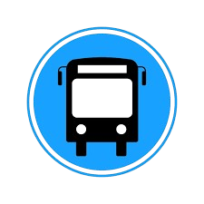
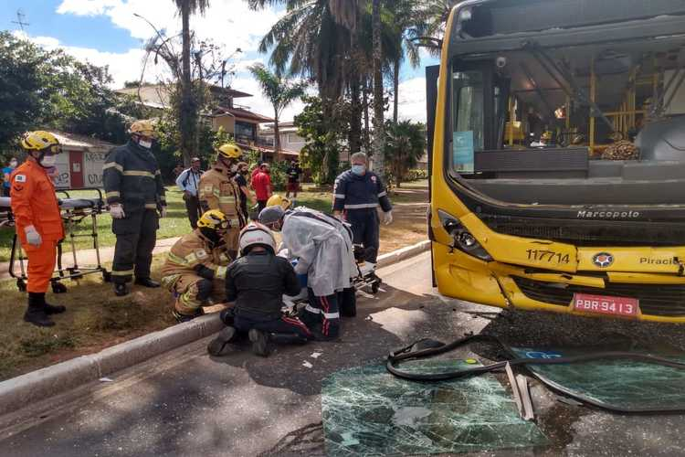

Terminal do São Cristovão
Devido a um acidente ocorrido na avenida Jeronimo de Albuquerque as linhas que trafegam nessa avenida apresentaram atrasos devido ao congestionamento. A linha dos onibus UEMA IPASE será a mais prejudicada, com um onibus a menos o tempo de espera demorá 20 minutos alem do esperado.

💬 24 | ❤️ 149 | 🔄 22